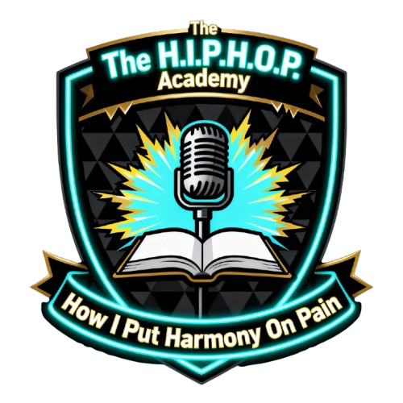
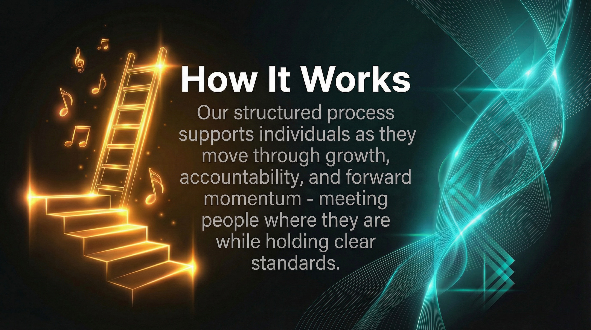

Structure and Accountability
Clear routines, expectations, and boundaries create safety and focus. Participants engage in consistent programming designed to reduce chaos and support forward momentum.

The H.I.P.H.O.P. AcademyHow I Put Harmony On PainNonprofit mission page
The H.I.P.H.O.P. Academy turns pain into harmony through structure, creativity, accountability, and real-world opportunity.
The Academy exists to support individuals in transition by providing structure, creative opportunity, and real-world exposure inside professional environments. Our work is grounded in lived experience, accountability, and consistency — not shortcuts or hype.
Hip Hop is more than music here. It is a framework for discipline, expression, ownership, and rebuilding identity.

Our approach
Clear routines, expectations, and boundaries create safety and focus. Participants engage in consistent programming designed to reduce chaos and support forward momentum.
Creativity becomes a tool for confidence, communication, and emotional processing. Expression is paired with professionalism so growth extends beyond the creative space.
Participants learn inside carefully managed professional environments, helping bridge the gap between learning and real life without disrupting business or client standards.
Trust the process
Programs serve individuals navigating major life transitions who are seeking structure, purpose, and a supportive environment to grow. Participants may come through community organizations, workforce development programs, recovery support systems, or self-referral.
Reach out through our contact form, email, or referral partner. This first step helps us understand goals, readiness, and areas of support.
We conduct a brief intake to understand interests, needs, and fit. Participants are guided toward the most appropriate program pathway.
Participants engage in structured sessions, workshops, creative labs, mentorship, and group activities aligned with their selected program.
Progress is supported through consistency, feedback, reflection, and accountability with room to adjust and strengthen skills.
Participants complete programming with clearer direction, next-step planning, and continued access to community connections.
Partner facilities and community collaboration
The Academy partners with professional creative facilities that align with our mission and standards. These partnerships allow participants to learn in real spaces while maintaining clear boundaries that protect both paid clients and program participants.
Facilities benefit by contributing to meaningful community impact, honoring legacy, and helping shape the next generation, while the Academy gains stable environments for programming and expansion.
About the nonprofit
The H.I.P.H.O.P. Academy is a nonprofit mission hub that uses the language and discipline of Hip Hop to help people rebuild identity, strengthen confidence, and move toward stability.
Our programs are designed to meet people where they are while holding standards that prepare them for independence, responsibility, and long-term success.
Current program
Boss Up Bootcamp teaches practical AI, creativity, and entrepreneurship workflows so participants can turn ideas into brands, websites, music concepts, graphics, video content, and launch plans.